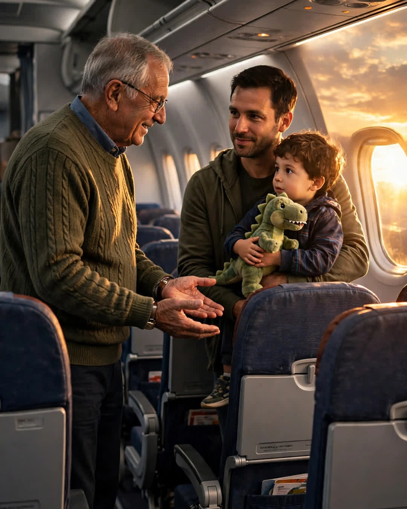

The Window Seat
A Clipp Kaili original story

The man in seat 14A had been watching the clouds for twenty minutes when he gave up his window seat to a stranger.
Daniel Reyes had booked that flight six months early. First trip back to Ohio since his father's funeral. He paid extra for the window, row fourteen — the side where the sunset would be. He had a book he wasn't reading and a window he kept staring out of like it owed him an answer.
Then the family boarded late.
A young father, maybe thirty, carrying a backpack, a stuffed dinosaur, and a little boy of five who was already crying. Their seats were split — the father in 14B, and the boy three rows back, alone. The father tried to smile. His hands were shaking too hard to work the seatbelt.
"This is our first flight," he told the flight attendant, quietly. "His mom was supposed to—" He stopped. "She couldn't come. It's just us. He has never flown without her holding his hand."
The boy's crying got louder. Daniel looked at his window. He looked at the sunset he had paid extra to watch alone with his grief.
Then he stood up.
"Take my seat," he said. "Both of you. Father and son sit together. I'll take his, back there. It's fine."
It wasn't fine. The seat in row seventeen was middle, between a sleeping man and a woman with a loud tablet. Daniel sat in it for three hours with his knees against the seat in front of him and never once regretted it. From two rows ahead he could hear the boy's crying stop. He could hear the father's voice, soft and steady, pointing out the clouds. He heard the boy laugh once, high and surprised, at the exact moment the plane broke through into gold light.
"Look, Daddy! We're above the weather!"
Daniel closed his eyes. He thought about his own father, who had loved flying and never got to teach a grandson about clouds. He thought grief, done right, might just be love looking for somewhere to sit.
At baggage claim, the young father found him. The boy was asleep on his shoulder, dinosaur under one arm.
"I don't know your name," the father said. "But my son will remember his first flight as the day a kind man gave him the sky. Thank you."
They shook hands. Life moved on. Daniel flew home, buried his book on a shelf, and thought about that flight less and less, the way we do with small kindnesses that cost us almost nothing.
Twenty-three years later, Daniel was seventy-one, flying to Ohio again, slower now, with a cane folded in his carry-on. As the plane leveled off, the pilot's voice came over the speaker, warm and steady.
"Ladies and gentlemen, this is Captain Noah Bennett. I want to welcome a special passenger today. Twenty-three years ago, on my very first flight, I was a scared five-year-old boy separated from my dad — until the man in seat 14A gave up his window seat so my father could hold my hand. I fell in love with the sky that day, sir. Because of you, I never stopped chasing it."
The cabin went quiet.
"I've thought about you on every flight I've ever flown," the captain said. "Welcome aboard, Mr. Reyes. This time, the window seat is yours. It always was."
A flight attendant led Daniel forward, to first class, to a wide window seat with his name on a small card. Outside, the clouds were doing their old golden trick. Daniel pressed his forehead lightly to the glass, an old man crying quietly at a kindness coming home.
Some seats you give away for three hours.
Some come back to you twenty-three years later, at thirty thousand feet, carrying your name.
This story is a work of fiction, written to touch hearts and bring families closer.
← Back to all stories